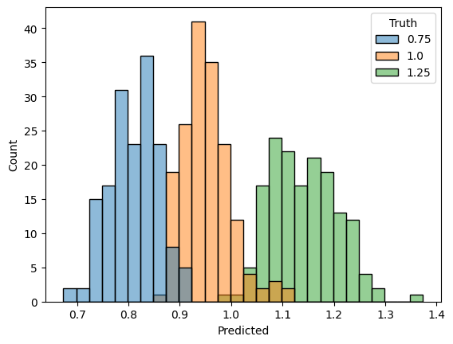
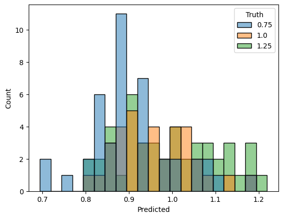

import pickle
from gcdyn.models import NeuralNetworkModel
from gcdyn.poisson import ConstantResponse
import numpy as np
import pandas as pd
import seaborn as sns
import matplotlib.pyplot as plt
import random
Train-test split#
with open("merged-simu.pkl", "rb") as f:
samples = pickle.load(f)
N = len(samples["trees"])
sublist = lambda x, idx: [x[i] for i in idx]
train_idx = random.sample(range(N), int(0.8 * N))
test_idx = [i for i in range(N) if i not in train_idx]
train_samples = {key: sublist(val, train_idx) for key, val in samples.items()}
test_samples = {key: sublist(val, test_idx) for key, val in samples.items()}
Train model#
param_to_predict = [
[ConstantResponse(row[0].xscale)] for row in train_samples["responses"]
]
model = NeuralNetworkModel(train_samples["trees"], param_to_predict)
Metal device set to: Apple M1 Pro
systemMemory: 16.00 GB
maxCacheSize: 5.33 GB
model.fit(epochs=100)
Epoch 1/100
16/16 [==============================] - 2s 69ms/step - loss: 2.5102
Epoch 2/100
16/16 [==============================] - 1s 32ms/step - loss: 0.0587
Epoch 3/100
16/16 [==============================] - 1s 31ms/step - loss: 0.0712
Epoch 4/100
16/16 [==============================] - 1s 31ms/step - loss: 0.1062
Epoch 5/100
16/16 [==============================] - 1s 34ms/step - loss: 0.0385
Epoch 6/100
16/16 [==============================] - 1s 37ms/step - loss: 0.0479
Epoch 7/100
16/16 [==============================] - 0s 30ms/step - loss: 0.0710
Epoch 8/100
16/16 [==============================] - 1s 33ms/step - loss: 0.0475
Epoch 9/100
16/16 [==============================] - 0s 30ms/step - loss: 0.0566
Epoch 10/100
16/16 [==============================] - 1s 35ms/step - loss: 0.0463
Epoch 11/100
16/16 [==============================] - 0s 31ms/step - loss: 0.0468
Epoch 12/100
16/16 [==============================] - 1s 34ms/step - loss: 0.0465
Epoch 13/100
16/16 [==============================] - 0s 30ms/step - loss: 0.0433
Epoch 14/100
16/16 [==============================] - 1s 35ms/step - loss: 0.0400
Epoch 15/100
16/16 [==============================] - 1s 34ms/step - loss: 0.0462
Epoch 16/100
16/16 [==============================] - 0s 31ms/step - loss: 0.0407
Epoch 17/100
16/16 [==============================] - 0s 30ms/step - loss: 0.0375
Epoch 18/100
16/16 [==============================] - 0s 30ms/step - loss: 0.0346
Epoch 19/100
16/16 [==============================] - 0s 30ms/step - loss: 0.0404
Epoch 20/100
16/16 [==============================] - 0s 30ms/step - loss: 0.0396
Epoch 21/100
16/16 [==============================] - 1s 33ms/step - loss: 0.0335
Epoch 22/100
16/16 [==============================] - 0s 31ms/step - loss: 0.0427
Epoch 23/100
16/16 [==============================] - 1s 33ms/step - loss: 0.0351
Epoch 24/100
16/16 [==============================] - 1s 32ms/step - loss: 0.0385
Epoch 25/100
16/16 [==============================] - 1s 33ms/step - loss: 0.0393
Epoch 26/100
16/16 [==============================] - 0s 30ms/step - loss: 0.0359
Epoch 27/100
16/16 [==============================] - 0s 30ms/step - loss: 0.0330
Epoch 28/100
16/16 [==============================] - 0s 31ms/step - loss: 0.0360
Epoch 29/100
16/16 [==============================] - 1s 36ms/step - loss: 0.0386
Epoch 30/100
16/16 [==============================] - 1s 38ms/step - loss: 0.0355
Epoch 31/100
16/16 [==============================] - 1s 41ms/step - loss: 0.0345
Epoch 32/100
16/16 [==============================] - 1s 36ms/step - loss: 0.0341
Epoch 33/100
16/16 [==============================] - 1s 39ms/step - loss: 0.0307
Epoch 34/100
16/16 [==============================] - 0s 31ms/step - loss: 0.0308
Epoch 35/100
16/16 [==============================] - 0s 30ms/step - loss: 0.0300
Epoch 36/100
16/16 [==============================] - 1s 32ms/step - loss: 0.0312
Epoch 37/100
16/16 [==============================] - 0s 30ms/step - loss: 0.0300
Epoch 38/100
16/16 [==============================] - 1s 32ms/step - loss: 0.0294
Epoch 39/100
16/16 [==============================] - 0s 30ms/step - loss: 0.0241
Epoch 40/100
16/16 [==============================] - 0s 31ms/step - loss: 0.0284
Epoch 41/100
16/16 [==============================] - 0s 30ms/step - loss: 0.0244
Epoch 42/100
16/16 [==============================] - 0s 29ms/step - loss: 0.0262
Epoch 43/100
16/16 [==============================] - 0s 30ms/step - loss: 0.0226
Epoch 44/100
16/16 [==============================] - 0s 30ms/step - loss: 0.0225
Epoch 45/100
16/16 [==============================] - 1s 31ms/step - loss: 0.0197
Epoch 46/100
16/16 [==============================] - 1s 34ms/step - loss: 0.0265
Epoch 47/100
16/16 [==============================] - 0s 30ms/step - loss: 0.0214
Epoch 48/100
16/16 [==============================] - 0s 29ms/step - loss: 0.0181
Epoch 49/100
16/16 [==============================] - 0s 28ms/step - loss: 0.0159
Epoch 50/100
16/16 [==============================] - 0s 29ms/step - loss: 0.0169
Epoch 51/100
16/16 [==============================] - 0s 29ms/step - loss: 0.0176
Epoch 52/100
16/16 [==============================] - 0s 29ms/step - loss: 0.0159
Epoch 53/100
16/16 [==============================] - 0s 29ms/step - loss: 0.0167
Epoch 54/100
16/16 [==============================] - 0s 29ms/step - loss: 0.0143
Epoch 55/100
16/16 [==============================] - 0s 30ms/step - loss: 0.0127
Epoch 56/100
16/16 [==============================] - 0s 29ms/step - loss: 0.0133
Epoch 57/100
16/16 [==============================] - 0s 30ms/step - loss: 0.0138
Epoch 58/100
16/16 [==============================] - 1s 32ms/step - loss: 0.0136
Epoch 59/100
16/16 [==============================] - 1s 35ms/step - loss: 0.0089
Epoch 60/100
16/16 [==============================] - 1s 37ms/step - loss: 0.0137
Epoch 61/100
16/16 [==============================] - 1s 31ms/step - loss: 0.0121
Epoch 62/100
16/16 [==============================] - 1s 35ms/step - loss: 0.0106
Epoch 63/100
16/16 [==============================] - 0s 30ms/step - loss: 0.0094
Epoch 64/100
16/16 [==============================] - 1s 32ms/step - loss: 0.0116
Epoch 65/100
16/16 [==============================] - 0s 30ms/step - loss: 0.0128
Epoch 66/100
16/16 [==============================] - 1s 31ms/step - loss: 0.0118
Epoch 67/100
16/16 [==============================] - 0s 30ms/step - loss: 0.0081
Epoch 68/100
16/16 [==============================] - 0s 29ms/step - loss: 0.0114
Epoch 69/100
16/16 [==============================] - 0s 29ms/step - loss: 0.0086
Epoch 70/100
16/16 [==============================] - 0s 29ms/step - loss: 0.0078
Epoch 71/100
16/16 [==============================] - 0s 29ms/step - loss: 0.0090
Epoch 72/100
16/16 [==============================] - 0s 29ms/step - loss: 0.0087
Epoch 73/100
16/16 [==============================] - 0s 31ms/step - loss: 0.0079
Epoch 74/100
16/16 [==============================] - 0s 29ms/step - loss: 0.0075
Epoch 75/100
16/16 [==============================] - 0s 29ms/step - loss: 0.0084
Epoch 76/100
16/16 [==============================] - 0s 29ms/step - loss: 0.0071
Epoch 77/100
16/16 [==============================] - 1s 33ms/step - loss: 0.0068
Epoch 78/100
16/16 [==============================] - 0s 31ms/step - loss: 0.0088
Epoch 79/100
16/16 [==============================] - 0s 31ms/step - loss: 0.0056
Epoch 80/100
16/16 [==============================] - 1s 31ms/step - loss: 0.0087
Epoch 81/100
16/16 [==============================] - 0s 29ms/step - loss: 0.0065
Epoch 82/100
16/16 [==============================] - 1s 34ms/step - loss: 0.0059
Epoch 83/100
16/16 [==============================] - 1s 32ms/step - loss: 0.0065
Epoch 84/100
16/16 [==============================] - 1s 32ms/step - loss: 0.0050
Epoch 85/100
16/16 [==============================] - 0s 30ms/step - loss: 0.0059
Epoch 86/100
16/16 [==============================] - 0s 30ms/step - loss: 0.0077
Epoch 87/100
16/16 [==============================] - 0s 30ms/step - loss: 0.0045
Epoch 88/100
16/16 [==============================] - 0s 31ms/step - loss: 0.0068
Epoch 89/100
16/16 [==============================] - 1s 32ms/step - loss: 0.0044
Epoch 90/100
16/16 [==============================] - 1s 33ms/step - loss: 0.0057
Epoch 91/100
16/16 [==============================] - 1s 31ms/step - loss: 0.0056
Epoch 92/100
16/16 [==============================] - 0s 30ms/step - loss: 0.0057
Epoch 93/100
16/16 [==============================] - 1s 34ms/step - loss: 0.0039
Epoch 94/100
16/16 [==============================] - 1s 30ms/step - loss: 0.0048
Epoch 95/100
16/16 [==============================] - 1s 38ms/step - loss: 0.0055
Epoch 96/100
16/16 [==============================] - 0s 30ms/step - loss: 0.0046
Epoch 97/100
16/16 [==============================] - 1s 33ms/step - loss: 0.0036
Epoch 98/100
16/16 [==============================] - 0s 30ms/step - loss: 0.0056
Epoch 99/100
16/16 [==============================] - 0s 30ms/step - loss: 0.0040
Epoch 100/100
16/16 [==============================] - 0s 31ms/step - loss: 0.0054
2023-05-02 15:12:16.953067: W tensorflow/tsl/platform/profile_utils/cpu_utils.cc:128] Failed to get CPU frequency: 0 Hz
Distribution of predictions on train set#
result = model.predict(train_samples["trees"], ladderize_trees=False)
df = pd.DataFrame(
{
"Predicted": np.array([row[0].value for row in result]),
"Truth": np.array(
[row[0].xscale for row in train_samples["responses"]], dtype=str
),
}
)
sns.histplot(df, x="Predicted", hue="Truth", binwidth=0.025)
plt.show()

Distribution of predictions on test set#
result = model.predict(test_samples["trees"])
df = pd.DataFrame(
{
"Predicted": np.array([row[0].value for row in result]),
"Truth": np.array(
[row[0].xscale for row in test_samples["responses"]], dtype=str
),
}
)
sns.histplot(df, x="Predicted", hue="Truth", binwidth=0.025)
plt.show()
